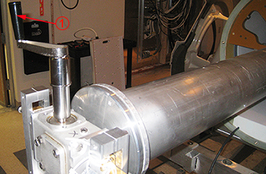
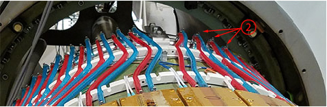

- 00000018WIA30819030GYZ
- id_123741441.27
- Oct 2, 2025, 5:44:51 PM
Replacing PET detectors
Removal and installation instructions for replacing PET detectors.
Prerequisites
| Personnel requirements | |||
|---|---|---|---|
| Required persons | Preliminary requirements | Procedure | Finalization |
| 2 | 60 minutes | 15 minutes (per detector) | 75 minutes |
| Tools and test equipment | |||
|---|---|---|---|
| Item | Quantity | Part number | Manufacturer |
| Plastic Bucket | 1 | - | - |
| Nonmagnetic Titanium Service Tool Kit, Large Set | 1 | 5112581 | - |
| PET/MR Tool Set, Includes Case | 1 | 5543518 | - |
| PET/MR Body Tube Installation Tool | 1 | 5438864 | - |
| Consumables | |||
|---|---|---|---|
| Item | Quantity | Part number | Manufacturer |
| Coolant (Four 1-Gallon Bottles) | As needed | 5174313-4 or 5174313-14 | - |
| Paper Towel Rolls | As needed | - | - |
| Dispenser of 100 #6005 Large N-DEX Nitrile Disposable Gloves Best #6005L | 1 pair per person | 46-194427P400 | - |
| Replacement parts | |||
|---|---|---|---|
| Item | Quantity | Part number | Manufacturer |
| Shielded PET Detector Assembly | 1 of either assembly | 5508286 | - |
| Shielded PET Detector Assembly (For Software Version 30 and Later) | 5508286-2 | - | |
| Required conditions |
|---|
| Do the remaining prerequisite steps identified in PET Insert Maintenance Matrix after doing LOTO. |
| PET insert installation tool is set up. |
| Remove the PET insert. See PET/MR Insert Removal. |
| Do PET chiller and manifold coolant extraction. See PET Chiller and Manifold Coolant Extraction. |
| Safety | ||||
|---|---|---|---|---|
|
Before working in any GE HealthCare MR suite or doing any GE HealthCare service procedure, you must:
If you have any safety concerns at any time, do not begin work or immediately stop work and move to a safe location. Immediately contact your supervisor or site safety officer for instructions on how to proceed. | ||||
| ||||
| ||||
About this task
This procedure covers the replacement of the PET detectors.
System preparation
Procedure
- Turn off the PROP circuit breaker to remove power to the photon reconstruction organization processor (PROP), which turns off the low voltage power supply (LVPS) and the 80 volt power supply (80V PS).
Figure 1. PROP circuit breaker 
- Press the On/Off button to turn the PET chiller off, and put the chiller breaker (CB12) in the off position.
Figure 2. PET chiller on/off button 
Removing PET detectors
Procedure
To minimize potential fluid leakage, turn the insertion tool using the handle (1) so that the PET detector hose connections at the manifold (2) are at the top of the PET/MR insert.Notice 
Figure 4. Rotating insertion tool 
Figure 5. Manifold hose connections at top 
- The following steps are to remove the Gen2 detector module (DMOD) cable. To remove the Gen3 DMOD cable, continue to Step 4.
Notice - Remove the two screws (1) with a Phillips screwdriver.
- Remove the two screws (2) with an Allen wrench.
- Remove the clamp (3).
Figure 6. Removing the DMOD power cable (Gen2 cable) 
- Remove the Gen3 DMOD cable (3):
- Remove the two screws (1) with a flat head screwdriver.
Figure 7. Removing the two clamp screws 
- Remove the clamp (2).
Figure 8. Removing the clamp 
- Remove the two screws (1) with a flat head screwdriver.
- Remove the DMOD cable bands if necessary by inserting the tip of a flat blade screwdriver in the buckle and twist the screwdriver to disengage the lock, then pulling the cable band out of the buckle.Note If a cable breaks, see DMOD Cable Band Installation.
Figure 9. Cable band removal (5761537) 
- Put clean lint-free towels below the hose connections at the manifold to contain any fluid leakage.
Figure 10. Using lint-free towels 
- Use the crimping tool to remove the hose clamps at the manifold
end of the hoses.
- Put the tool over the crimp in the clamp, and rotate 120° clockwise, and then counterclockwise back to 0°, counterclockwise another 120°, and then clockwise back to 0°. This should break the crimp; if not, repeat.
- Open the crimper and slip the edge of one side under the lip
of the hose clamp. The other edge should be on the other side of the
crimp, as shown.
Figure 11. Crimping tool 
- Gently pull the hose clamp, which will come apart and remain in one piece.
- Use a flat blade screwdriver to remove the four pan head screws from the detector, and save for later use.
Figure 12. Removing detector screws 
- Disconnect the fiber-optic data cable (1) from the detector.
Figure 13. Disconnecting fiber-optic data cable 
Installing PET detectors
Procedure
- Fasten the new detector (2) with the four pan head screws removed earlier.
Figure 14. Inserting new PET detector 
- Size the hoses (3) to reach the manifold from the new detector. (Hose end should extend 6.4 mm (0.25 inches) past the bead (4) on the beaded fittings.)
Figure 15. Sizing hoses 
- Slide the red hose and blue hose for the PET detector onto the
manifold tube extensions, placing the red hose on the inner ring and
the blue hose on the outer ring.Note
All red and blue hoses are shown connected, but there is only one each per PET detector.
Figure 17. Clamping red and blue hoses 
- Crimp the clamp around each hose with the crimping tool.
Figure 18. Crimping hoses